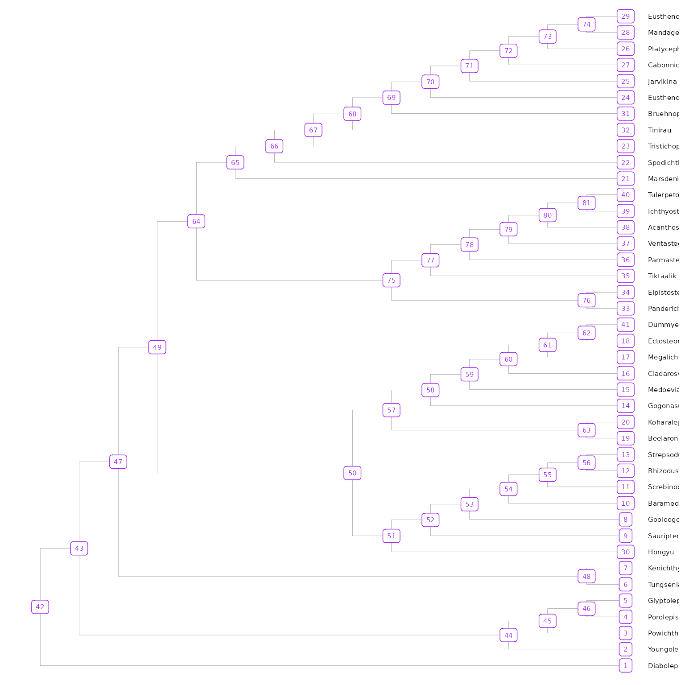
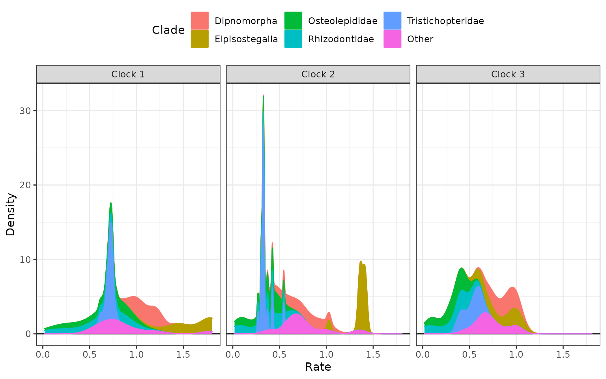
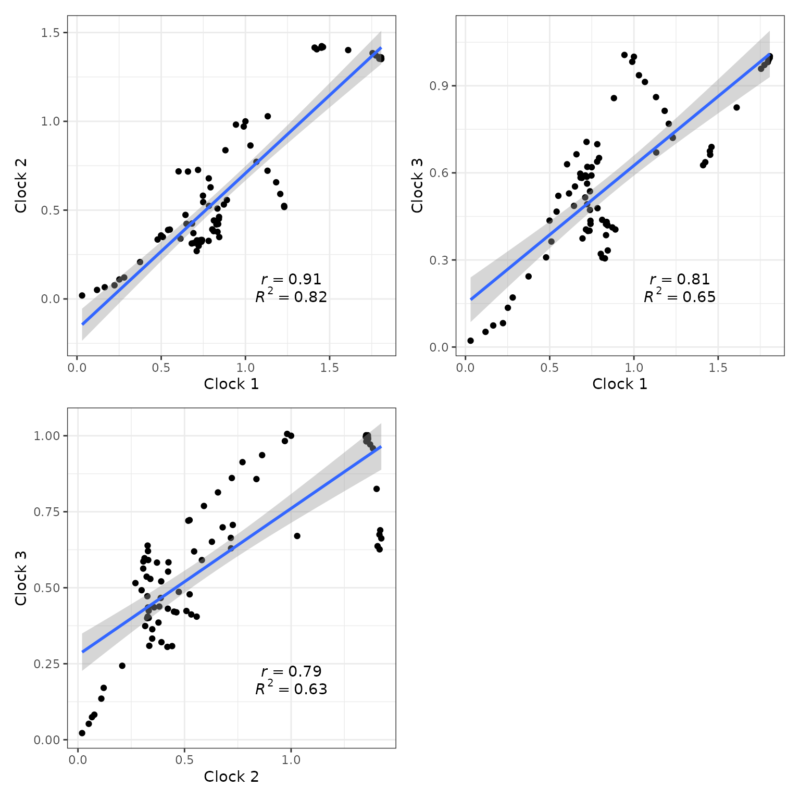

Evolutionary Rates & Selection Strength
2022-05-04
Source:vignettes/rates-selection.Rmd
rates-selection.RmdThis vignette explains how to extract evolutionary rate parameters estimated from relaxed clock Bayesian inference analyses produced by the program Mr. Bayes. It also shows how to use evolutionary rate based inference of selection strength (or mode) adapted to clock-based rates, as introduced by Simões and Pierce (2021).
Evolutionary Rates Statistics and Plots
In this section, we will extract evolutionary rate parameters from each node from a Bayesian clock (time-calibrate) summary tree produced by Mr. Bayes. The functions below will store them in a data frame, produce summary statistics tables, and create different plots showing how rates are distributed across morphological partitions and clades.
Load the EvoPhylo package
1. Get rates from the clock tree and create a rate table
First, import a Bayesian clock tree using treeio’s function read.mrbayes() (= read.beast()).
## Import summary tree with three clock partitions produced by
## Mr. Bayes (.t or .tre files) from your local directory
tree3p <- treeio::read.mrbayes("Tree3p.t")Below, we use the example tree tree3p that accompanies EvoPhylo.
data(tree3p)Subsequently, using get_clockrate_table(), users can extract mean or median rate values for each node in the summary tree that were annotated by Mr. Bayes when creating the summary tree with Mr. Bayes “sumt” command. These mean or median rate values are calculated by Mr. Bayes taking into account all trees from the posterior sample. This works for any summary tree produced by Mr. Bayes: a majority rule consensus or the fully resolved maximum compatible tree (the latter is used in the examples here).
Please note that analyses must have reached the stationarity phase and independent runs converging for the summary statistics in each node to be meaningful summaries of the posterior sample.
## Get table of clock rates with summary stats for each node in
## the tree for each relaxed clock partition
rate_table_means_no_clades3 <- get_clockrate_table(tree3p, summary = "mean")2. Export the rate table
This is a necessary step to subsequently open the rate table spreadsheet locally (e.g., using Microsoft Office Excel) and customize the table with clade names associated with with each node in the tree for downstream analysis.
## Export the rate tables
write.csv(rate_table_means_no_clades3, file = "RateTable_Means3.csv")3. Plot tree node labels
To visualize the node values in the tree, you can use ggtree().
## Plot tree node labels
library(ggtree)
tree_nodes <- ggtree(tree3p, branch.length = "none", size = 0.05) +
geom_tiplab(size = 2, linesize = 0.01, color = "black", offset = 0.5) +
geom_label(aes(label = node), size = 2, color="purple", position = "dodge")
tree_nodes
## Save your plot to your working directory as a PDF
ggplot2::ggsave("Tree_nodes.pdf", width = 10, height = 10)4. Get summary statistics table and plots
Import the rate table with clade membership (new “clade” column added)
## Import rate table with clade membership (new "clade" column added)
## from your local directory
rate_table_clades_means3 <- read.csv("RateTable_Means3_Clades.csv", header = TRUE)Below, we use the rate table with clade membership rate_table_clades_means3 that accompanies EvoPhylo.
## clade nodes rates1 rates2 rates3
## 1 Dipnomorpha 1 0.943696 0.981486 1.006164
## 2 Dipnomorpha 2 1.065326 0.772074 0.913194
## 3 Dipnomorpha 3 1.182460 0.656872 0.813618
## 4 Dipnomorpha 4 1.229767 0.523709 0.722519
## 5 Dipnomorpha 5 1.230564 0.517773 0.720479
## 6 Other 6 0.658855 0.717277 0.663950Obtain summary statistics table and plots for each clade by clock using clockrate_summary(). Supplying a file path to file save the output to that file.
## Get summary statistics table for each clade by clock
clockrate_summary(rate_table_clades_means3,
file = "Sum_RateTable_Means3.csv")| clade | clock | n | mean | sd | min | Q1 | median | Q3 | max |
|---|---|---|---|---|---|---|---|---|---|
| Dipnomorpha | 1 | 8 | 1.10 | 0.11 | 0.94 | 1.02 | 1.10 | 1.19 | 1.23 |
| Elpisostegalia | 1 | 14 | 1.61 | 0.22 | 1.13 | 1.45 | 1.68 | 1.80 | 1.81 |
| Osteolepididae | 1 | 11 | 0.63 | 0.26 | 0.16 | 0.44 | 0.81 | 0.84 | 0.87 |
| Rhizodontidae | 1 | 14 | 0.57 | 0.30 | 0.03 | 0.33 | 0.67 | 0.83 | 0.89 |
| Tristichopteridae | 1 | 21 | 0.71 | 0.04 | 0.61 | 0.69 | 0.72 | 0.74 | 0.78 |
| Other | 1 | 11 | 0.89 | 0.36 | 0.54 | 0.69 | 0.78 | 0.94 | 1.81 |
| Dipnomorpha | 2 | 8 | 0.75 | 0.18 | 0.52 | 0.62 | 0.75 | 0.89 | 0.98 |
| Elpisostegalia | 2 | 14 | 1.36 | 0.10 | 1.03 | 1.36 | 1.38 | 1.41 | 1.42 |
| Osteolepididae | 2 | 11 | 0.34 | 0.15 | 0.07 | 0.28 | 0.38 | 0.45 | 0.53 |
| Rhizodontidae | 2 | 14 | 0.33 | 0.18 | 0.02 | 0.17 | 0.38 | 0.44 | 0.56 |
| Tristichopteridae | 2 | 21 | 0.34 | 0.06 | 0.27 | 0.32 | 0.33 | 0.33 | 0.55 |
| Other | 2 | 11 | 0.75 | 0.25 | 0.39 | 0.61 | 0.72 | 0.78 | 1.35 |
| Dipnomorpha | 3 | 8 | 0.87 | 0.11 | 0.72 | 0.79 | 0.89 | 0.95 | 1.01 |
| Elpisostegalia | 3 | 14 | 0.83 | 0.16 | 0.63 | 0.67 | 0.89 | 0.99 | 1.00 |
| Osteolepididae | 3 | 11 | 0.32 | 0.13 | 0.07 | 0.27 | 0.33 | 0.42 | 0.49 |
| Rhizodontidae | 3 | 14 | 0.32 | 0.17 | 0.02 | 0.21 | 0.40 | 0.43 | 0.52 |
| Tristichopteridae | 3 | 21 | 0.52 | 0.08 | 0.37 | 0.44 | 0.54 | 0.59 | 0.64 |
| Other | 3 | 11 | 0.73 | 0.17 | 0.47 | 0.64 | 0.70 | 0.81 | 1.00 |
5. Plot rates by clock partition and clade
Plot distributions of rates by clock partition and clade with clockrate_dens_plot().
## Overlapping plots
clockrate_dens_plot(rate_table_clades_means3, stack = FALSE,
nrow = 1, scales = "fixed")
Sometimes using stacked plots provides a better visualization as it avoids overlapping distributions.
## Stacked plots
clockrate_dens_plot(rate_table_clades_means3, stack = TRUE,
nrow = 1, scales = "fixed")
It is also possible to append extra layers using ggplot2 function, such as for changing the color scale. Below, we change the color scale to be the Viridis scale.
## Stacked plots with viridis color scale
clockrate_dens_plot(rate_table_clades_means3, stack = TRUE,
nrow = 1, scales = "fixed") +
ggplot2::scale_color_viridis_d() +
ggplot2::scale_fill_viridis_d()
6. Rate linear models
We can also plot linear model regressions between rates from two or more clocks with clockrate_reg_plot().
## Plot regressions of rates from two clocks
p12 <- clockrate_reg_plot(rate_table_clades_means3, clock_x = 1, clock_y = 2)
p13 <- clockrate_reg_plot(rate_table_clades_means3, clock_x = 1, clock_y = 3)
p23 <- clockrate_reg_plot(rate_table_clades_means3, clock_x = 2, clock_y = 3)
library(patchwork) #for combining plots
p12 + p13 + p23 + plot_layout(ncol = 2)
## Save your plot to your working directory as a PDF
ggplot2::ggsave("Plot_regs.pdf", width = 8, height = 8)Rates from single clock analysis
You can also explore clock rates for summary trees including a single clock shared among all character partitions (or an unpartitioned analysis):
## Import summary tree with a single clock partitions produced by
## Mr. Bayes (.t or .tre files) from examples directory
tree1p <- treeio::read.mrbayes("Tree1p.t")Below, we use the example tree tree1p that accompanies EvoPhylo.
data(tree1p)Then, get table of clock rates with summary stats for each node in the tree for each relaxed clock partition.
rate_table_means_no_clades1 <- get_clockrate_table(tree1p, summary = "mean")
## Export the rate tables
write.csv(rate_table_means_no_clades1, file = "RateTable_Means1.csv")
## Import rate table after adding clade membership (new "clade" column added)
rate_table_clades_means1 <- read.csv("RateTable_Means1_Clades.csv", header = TRUE)
data(rate_table_clades_means1)
## Get summary statistics table for each clade by clock
clockrate_summary(rate_table_clades_means1,
file = "Sum_RateTable_Medians1.csv")| clade | n | mean | sd | min | Q1 | median | Q3 | max |
|---|---|---|---|---|---|---|---|---|
| Dipnomorpha | 8 | 0.57 | 0.28 | 0.22 | 0.37 | 0.54 | 0.78 | 0.95 |
| Elpisostegalia | 14 | 0.91 | 0.25 | 0.44 | 0.77 | 0.85 | 1.03 | 1.35 |
| Osteolepididae | 11 | 0.23 | 0.10 | 0.03 | 0.18 | 0.23 | 0.30 | 0.38 |
| Rhizodontidae | 14 | 0.18 | 0.15 | 0.00 | 0.04 | 0.20 | 0.29 | 0.42 |
| Tristichopteridae | 21 | 0.39 | 0.43 | 0.05 | 0.11 | 0.19 | 0.34 | 1.32 |
| Other | 11 | 0.41 | 0.26 | 0.20 | 0.25 | 0.28 | 0.45 | 1.00 |
## Stacked plots with viridis color scale
clockrate_dens_plot(rate_table_clades_means1, stack = TRUE,
nrow = 1, scales = "fixed") +
ggplot2::scale_color_viridis_d() +
ggplot2::scale_fill_viridis_d()
Selection strength (mode)
In this section, we will use evolutionary rate based inference of selection strength (or mode), as first introduced by Baker et al. (2016) for continuous traits, and later adapted to clock-based rates by Simões and Pierce (2021).
1. Import and transform table
## Import rate table with clade membership (new "clade" column added)
## from your local directory with "mean" values
rate_table_clades_means3 <- read.csv("RateTable_Means3_Clades.csv", header = TRUE)Below, we use the rate table with clade membership rate_table_clades_means3 that accompanies EvoPhylo.
data(rate_table_clades_means3)It is necessary to transform the table from wide to long format with clock_reshape().
## Transform table from wide to long format
rates_by_clade <- clock_reshape(rate_table_clades_means3)2. Import combined log file from all runs.
This is produced by using combine_log(). Alternatively, users can also use LogCombiner from the BEAST2 software package. The first argument passed to combine_log() should be a path to the folder containing the log files to be imported and combined.
## Import all log (.p) files from all runs and combine them, with burn-in = 25%
## and downsampling to 2.5k trees in each log file
posterior3p <- combine_log("LogFiles3p", burnin = 0.25, downsample = 1000)Below, we use the posterior dataset posterior3p that accompanies EvoPhylo.
3. Pairwise t-tests of Rate values
The function get_pwt_rates() will produce a table of pairwise t-tests for differences between the mean clockrate value in the posterior and the absolute rate for each tree node.
## Get table of pairwise t-tests for difference between the posterior
## mean and the rate for each tree node
rate_sign_tests <- get_pwt_rates(rate_table_clades_means3, posterior3p)
## Show first 10 lines of table
head(rate_sign_tests, 10)| clade | nodes | clock | relative rate | absolute rate (mean) | null | p.value |
|---|---|---|---|---|---|---|
| Dipnomorpha | 1 | 1 | 0.943696 | 0.0118443 | 0.0118443 | 0 |
| Dipnomorpha | 2 | 1 | 1.065326 | 0.0133709 | 0.0133709 | 0 |
| Dipnomorpha | 3 | 1 | 1.182460 | 0.0148411 | 0.0148411 | 0 |
| Dipnomorpha | 4 | 1 | 1.229767 | 0.0154348 | 0.0154348 | 0 |
| Dipnomorpha | 5 | 1 | 1.230564 | 0.0154448 | 0.0154448 | 0 |
| Other | 6 | 1 | 0.658855 | 0.0082693 | 0.0082693 | 0 |
| Other | 7 | 1 | 0.603090 | 0.0075694 | 0.0075694 | 0 |
| Osteolepididae | 8 | 1 | 0.843373 | 0.0105852 | 0.0105852 | 0 |
| Osteolepididae | 9 | 1 | 0.872012 | 0.0109446 | 0.0109446 | 0 |
| Osteolepididae | 10 | 1 | 0.811473 | 0.0101848 | 0.0101848 | 0 |
## Export the table
write.csv(rate_sign_tests, file = "RateSign_tests.csv")4. Plot selection gradient on the summary tree
Using different thresholds, Identify the strength (or mode) across branches in the tree for each clock partition with plot_treerates_sgn().
## Plot tree using various thresholds for clock partition 1
A1 <- plot_treerates_sgn(
tree3p, posterior3p,
clock = 1, #Show rates for clock partition 1
summary = "mean", #sets summary stats to get from summary tree nodes
branch_size = 1.5, tip_size = 3, #sets size for tree elements
xlim = c(-450, -260), nbreaks = 8, geo_size = list(3, 3), #sets limits and breaks for geoscale
threshold = c("1 SD", "2 SD")) #sets threshold for selection mode
A1
Plot tree using various thresholds for the other clock partitions and combine them.
## Plot tree using various thresholds for other clock partition and combine them
A2 <- plot_treerates_sgn(
tree3p, posterior3p,
clock = 2, #Show rates for clock partition 2
summary = "mean", #sets summary stats to get from summary tree nodes
branch_size = 1.5, tip_size = 3, #sets size for tree elements
xlim = c(-450, -260), nbreaks = 8, geo_size = list(3, 3), #sets limits and breaks for geoscale
threshold = c("1 SD", "2 SD")) #sets threshold for selection mode
A3 <- plot_treerates_sgn(
tree3p, posterior3p,
clock = 3, #Show rates for clock partition 2
summary = "mean", #sets summary stats to get from summary tree nodes
branch_size = 1.5, tip_size = 3, #sets size for tree elements
xlim = c(-450, -260), nbreaks = 8, geo_size = list(3, 3), #sets limits and breaks for geoscale
threshold = c("1 SD", "2 SD")) #sets threshold for selection mode
library(patchwork)
A1 + A2 + A3 + plot_layout(nrow = 1)
## Save your plot to your working directory as a PDF
ggplot2::ggsave("Tree_Sel_3p.pdf", width = 20, height = 8)References
Baker, Joanna, Andrew Meade, Mark Pagel, and Chris Venditti. 2016. “Positive Phenotypic Selection Inferred from Phylogenies.” Biological Journal of the Linnean Society 118 (1): 95–115.
Simões, Tiago R., and Stephanie E. Pierce. 2021. “Sustained High Rates of Morphological Evolution During the Rise of Tetrapods.” Nature Ecology & Evolution 5 (10): 1403–14. https://doi.org/10.1038/s41559-021-01532-x.